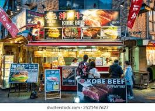

고베 여행 가이드 (Kobe)
고베는 바다와 산, 서양식 거리와 온천이 모두 모여 있는 도시입니다. 하버랜드의 항만 야경, 기타노 이진칸의 이국적인 분위기, 아리마 온천의 휴식을 한 번에 즐길 수 있습니다.

🇯🇵 고베 한눈에 보기
항구 도시 특유의 개방적인 분위기와 산·온천이 조합된 관서 지방의 매력적인 여행지입니다.
- 하버랜드: 항만 야경과 쇼핑·카페가 모여 있는 수변 구역
- 기타노 이진칸: 서양식 건축물이 모인 언덕 마을
- 아리마 온천: 일본 3대 온천 중 하나로 꼽히는 전통 온천 마을
.jpg)
.jpg)
🌃 하버랜드 · 메리켄 파크
포트타워, BE KOBE 모뉴먼트, 대관람차 등이 모여 있는 대표 야경 구역입니다.
- 해질녘에 가면 바다와 도시 불빛이 함께 어우러진 풍경을 볼 수 있음
- 바다를 보며 식사할 수 있는 레스토랑·카페가 많아 데이트 코스로도 인기
🏠 기타노 이진칸 거리
서양인 거류지였던 역사를 가진 언덕 마을로, 유럽풍 저택과 카페가 모여 있습니다.
- 우로코 하우스 등 서양식 저택 내부를 관람할 수 있는 시설 존재
- 언덕 위 카페에서 고베 시내와 바다를 내려다볼 수 있음
♨ 아리마 온천
금천·은천으로 유명한 전통 온천 마을로, 고베 시내에서 비교적 가까운 거리에 위치합니다.
- 온천 여관과 공중목욕탕이 골목 사이사이에 자리 잡은 구조
- 온천만주, 탄산음료 등 온천 거리 특유의 간식도 즐길 수 있음

🍽 고베 대표 음식
고급 와규인 고베규와 빵·카페 문화가 유명한 도시입니다.

- 고베규 – 스테이크·샤브샤브·스키야키 등 다양한 스타일로 즐길 수 있는 고급 소고기
- 베이커리·카페 – 서양식 문화 영향으로 감각적인 빵집과 카페가 많음
🗺 고베 추천 코스
고베 1일 핵심 코스
당일치기
오전: 기타노 이진칸 거리 산책
오후: 산노미야·모토마치 주변 카페·쇼핑
저녁: 하버랜드·메리켄 파크 야경
오후: 산노미야·모토마치 주변 카페·쇼핑
저녁: 하버랜드·메리켄 파크 야경
고베 + 아리마 온천 코스
휴식 중심
1일차: 고베 시내(기타노·하버랜드) 관광
2일차: 아리마 온천에서 온천욕·골목 산책
2일차: 아리마 온천에서 온천욕·골목 산책